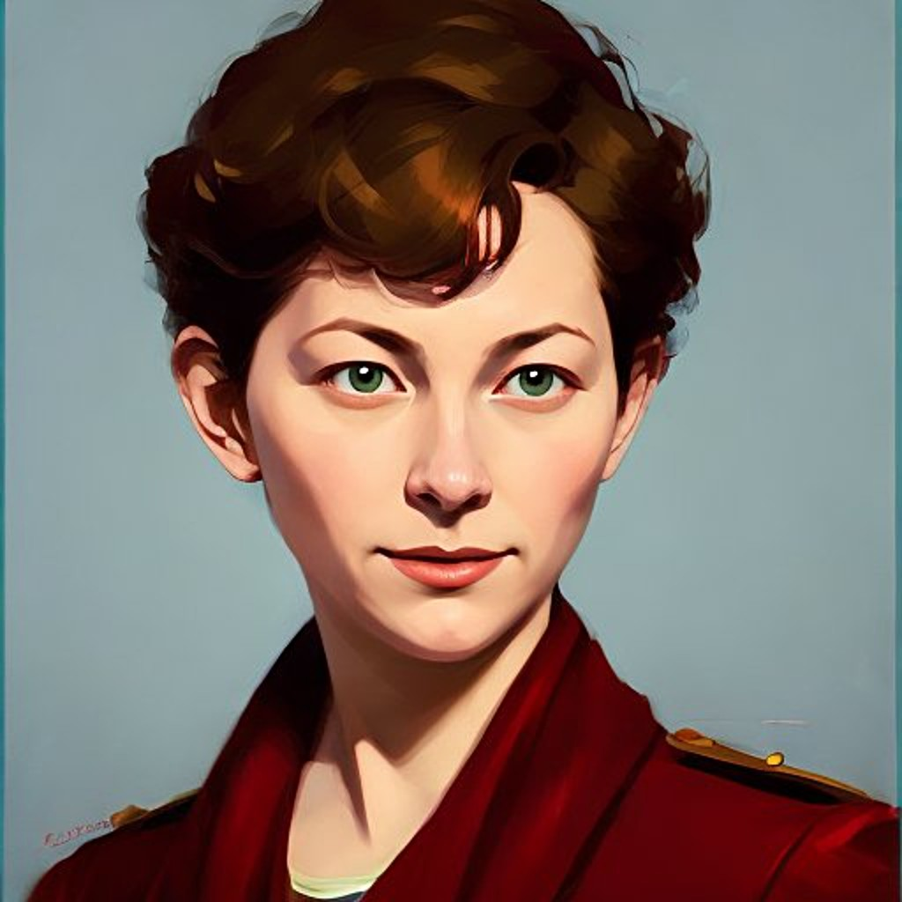

People-first companies.
Work that outlives us.
Noygear is the operating arm of Aware Partners, a family-controlled VC & PE. We build a small, deliberate portfolio of real-economy software companies, funded from a single balance sheet, with upskilling embedded in every one.
View PortfolioWe build real companies
Four ventures in portfolio — two live (Casa, Casita, March 2026), two launching in 2026 (Med-Tech in May, Ed-Tech in September). Each inherits shared infrastructure and operating discipline.
Upskilling-native by design
Our founding partner previously led one of the largest global upskilling programs in recent memory. That DNA is built into every Noygear venture.
Compounding capital
Shared components, playbooks, and operating muscle carry from one venture to the next. Permanent capital means no liquidation pressure — winners run on their own timeline.
Value of a currency = transactions ÷ units outstanding.
Four ventures. One balance sheet.
Casa
Opinionated maintenance-operations platform for mid-market commercial real estate operators. Work orders, SLAs, vendor scoring, photo-evidence lifecycle.
Casita
Casa's consumer equivalent. Helps households manage and delegate the operational load of running a home — seamlessly, with a real audit trail.
Med-Tech (stealth)
AI and operator rigor applied to a structurally underserved corner of clinical practice. In stealth through launch.
Ed-Tech (stealth)
Upskilling at institutional scale — our flagship social-impact venture, continuing a decade of global education work.
A team built for durability.

Al Buda
Al leads Aware Partners, the family-controlled VC & PE fund behind Noygear. Nineteen unicorns across a career that spans Lehman Brothers, Rakuten, PayPal, and Google, with two SaaS exits and $2.3B in M&A advised across the portfolio.
Before Noygear, Al founded 1 Million Women To Tech — one of the largest global upskilling programs of the last decade, reaching 200K+ learners across 145 countries in partnership with 400 universities, and recognized by the UN Technology & Innovation Lab. That upskilling DNA is now a design primitive in every Noygear venture.
Upskilling is embedded, not bolted on.
Investment criteria
Studio-originated companies. Typically first institutional check. Lead or co-lead.
Follow-on and co-invest alongside strategic outside capital at the seed round.
Family-controlled. Actively deploying. No fund clock. Selective co-invest syndicate.